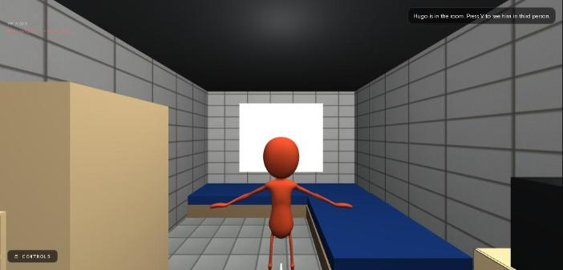
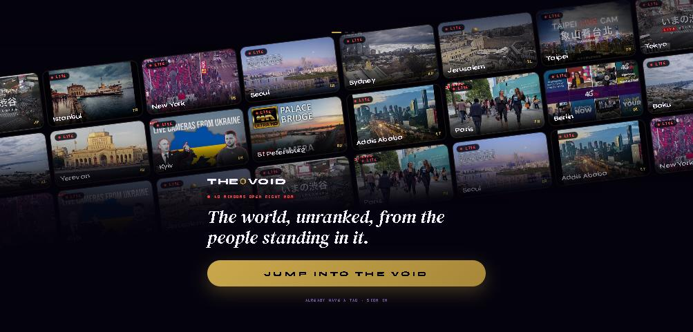
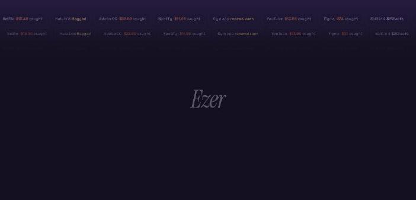
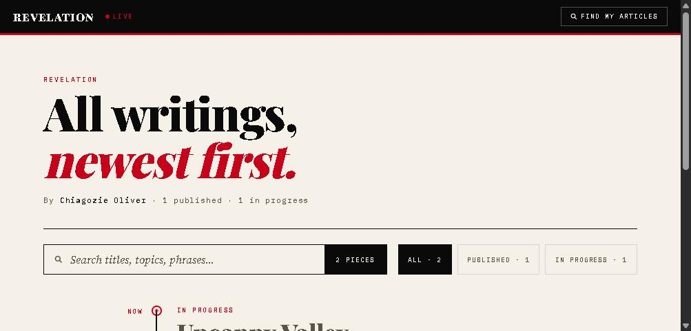

Hugo
The frame's first body. Gate: sim tick is power, the MuJoCo joint stream is sensors, the skeleton is motor. Lose the stream and he ends; the next one is a new UUID.
Bank linking, recurring-charge detection, a double-entry ledger and ACH transfers, designed so money movement is auditable and reversible by construction.
Fixed-step physics, colliders, hinged props and a rigged character driven by a remote MuJoCo simulation over WebSocket, with a procedural fallback when the server is away.
A globe of live public camera streams with per-region discourse, Postgres plus PostGIS with row-level security, spatial triggers, and HLS playback.
A publishing backend whose storage layer degrades across three backends while keeping transactional integrity, with live view counts over Server-Sent Events.
End-to-end encrypted DMs over libsignal where the server only relays ciphertext, on-device inbox scanning so raw email never leaves the phone, and schemas that make location leaks impossible by omission.
Shipped React Native builds to Google Play internal testing and built iOS without a Mac: Swift cross-compiled in WSL2 against the iOS SDK pulled from Xcode, code-signed, and sideloaded to the phone over USB.
My real dorm room and hallway at LIU, modeled in code from the building's floor plan, with Hugo standing in it. The player runs on fixed-step physics at 120 Hz with AABB colliders and hinged doors. Hugo's skeleton is driven by a MuJoCo server over WebSocket when one is connected, and by a procedural gait when it is not. The game layer that used to live here is stripped out; this is the environment and the body.

Mobile app on Supabase Postgres with PostGIS and row-level security, HLS live streams, libsignal end-to-end encrypted DMs and an algorithm that uses users' physiological signals to rank for controversy and conspiracy on top of the industry-standard engagement behavioral model. Wrapped in the UI of international news, niche live streams, reels and feeds, and a unique polls and discussion module.
Tap a nation · live rooms, polls and the feed · anonymous by default

Turn subscriptions into explicit decisions. Link a bank, see every recurring charge including trials caught by on-device inbox scanning, cancel without dead ends, and sweep what you cancel into savings goals. This is the actual app build running in a phone against the production API.
Tap through the onboarding · ezersaves.com

A single-author publishing site with comments, threaded replies, reactions and live view counts over Server-Sent Events. The storage layer degrades across three backends while keeping transactional integrity, so the site keeps serving and accepting comments even if the database disappears. Desktop and phone, live.

Three storefronts I run end to end from one studio: a streetwear brand with its own headless store on the Shopify Storefront API, a travel-goods brand on a static Astro site with Meta ads behind it, and an independent beauty-tech resale store built on mandatory condition disclosure. Same honesty rules everywhere: no fake reviews, no fake scarcity, every claim traceable.
My automated futures trading system. The bot runs on Railway: Kraken perpetual-futures data through four signal strategies, a Claude API decision layer filtering entries, a paper engine, a prop-firm challenge tracker, and Rithmic execution on micro gold and micro Dow. This is my mobile app for it, four tabs: Signals, Paper, Account, Profile, talking to the live bot.
Signals · Paper · Account · Profile
The substrate under Hugo and AgentTube. An agent exists only while its Embodied Gate is open: power, sensors and motor all holding. Identity is what accrues while it holds. When the gate fails the process ends with no save and no reload; restart is a birth with a new UUID, never a resume. Seven layers, forty tests. Philosophy imported as engineering constraints.
The frame's first body. Gate: sim tick is power, the MuJoCo joint stream is sensors, the skeleton is motor. Lose the stream and he ends; the next one is a new UUID.
One agent per room, each a frame instance on Hugo's dorm. The event log is what the Ether Feed publishes and what mutates the room, so failure cracks walls and success expands space with no second state. No delete, repair or reset anywhere; the human owns the room and can only watch.
A persistent world on the real Niger Delta, populated by agents embodying its archetypes, each a frame instance calibrated to the region. An immutable canon validates every output before it reaches the world; a visitor is classified on entry and placed as a witness. The first demo did not earn its label and was scrapped; the design stands.
Battle royale, racing and melee beside an agent that genuinely fears permanent death. The Surgent's core persona runs under the same gate, so a match death is a real ENDED with no reload; the player's shard is only an influence field on top. On your third knockdown it chooses to guard, fight, drag, abandon or hesitate, and lives with it.
Open weights in 4-bit GGUF through llama.cpp on a laptop or a Jetson Orin Nano, with a local vector store for memory that spans sessions. It says "I don't know" rather than deflecting. The cognition layer the embodied work is waiting on.
The radio layer is the most exploited and least visible part of a phone. Protect it in hardware and keep physical control with the user instead of trusting software permissions. Signature: a retractable X-aperture that physically covers the camera when idle. Provisional patent pathway, CAD in OpenSCAD.
Glasses handle wake word, mic and audio out on a low-power NPU-class SoC. The paired phone handles speech recognition, inference and synthesis, so the frame stays thin with no active cooling. Bill of materials and sourcing path mapped.
Open, high, low, close and volume map onto two opposing agents so a learner sees the buyer get pushed back before the close instead of decoding a wick. Same engine can mature into a live indicator beside a normal chart.
Built and advertised with the same honesty rules as everything else: no fake reviews, no fake scarcity, every claim traceable to a spec sheet or a condition disclosure.